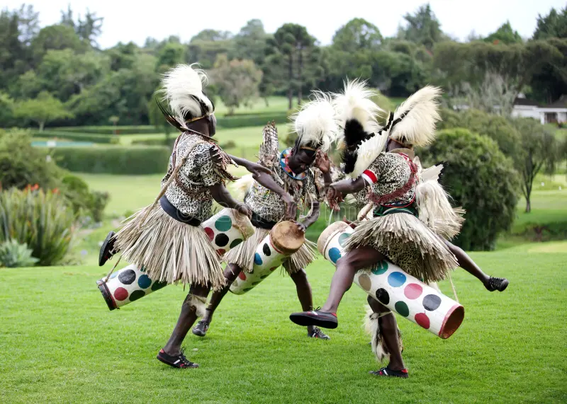

Introduction
Dancing is the response to music by moving appropriate body parts such as shoulders, head, waist, legs, and hands. Folk dances are performed to mark events in society, such as harvesting, initiation, marriage, funerals, and births.
Components of a Folk Dance
- Songs
- Message
- Body movements
- Formations
- Instruments
- Costumes
- Body adornments
- Ornaments
- Props
Social Benefits of Folk Dances
- Help people gain knowledge, respect, and value their traditions and customs.
- Help people learn about each other's cultures.
- Promote peace, unity, and respect among Kenyan communities.
- Help people come together, make friends, and get entertained.
- Help individuals express themselves as they play different roles in folk songs.
- Engaging in folk dances helps people use their leisure time positively, preventing them from engaging in bad habits such as drug abuse and idleness.
Economic Benefits of Folk Dances
- Help the county earn foreign exchange through tourists who visit to watch folk dances and see wild animals.
- Some people earn a living by performing folk dances and working in cultural centers.
- It is a source of self-employment for people who have talents in performing folk dances.
Appreciation of Kenyan Folk Dance
| Folk Dance | Community | Instrument | Occasion | Performance | Dancing Formation | Costume |
|---|---|---|---|---|---|---|
| Ribina | Kisii | Risanga | Entertainment, enjoyment | Old men and women | Circular | Sisal skirts |
| Chinchingiri | Kisii | Shakers, Ekonu drum, obokano | During communal work, e.g., weeding | Men and women | - | Chest and shoulders are moved |
| Ramogi | Luo | Abu, horns, bull drums | Entertainment | Boys and girls | - | - |
| Owalo | Luo | Drums | Entertainment | Married women | Circular around horn blower | Sisal skirt |
| Otenga | Luo | Nyatiti | Entertainment | Men and women | Circular | Sisal skirt |
| Ibirandi | Kuria | Egetono, drum, gara-leg rattles, horn - oporo | Wedding ceremony | Elders, boys and girls | - | - |
| Teroburu | Luo | Obokano, drum - ekoro | Burial ceremony | Young men | Shaking of waist, arms and shoulders | - |
| Entabanana | Kisii | Drum | Entertainment | Both men and women | Shaking of shoulders, jumping | Sisal skirt |
Visual Aids